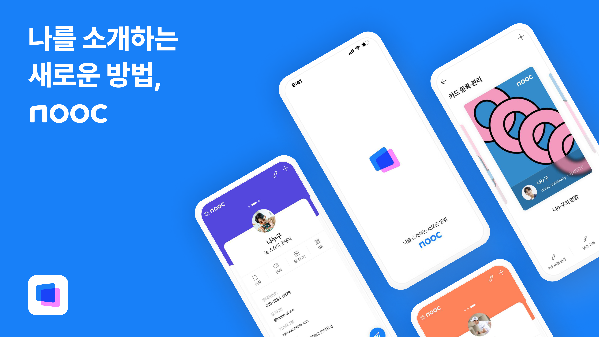
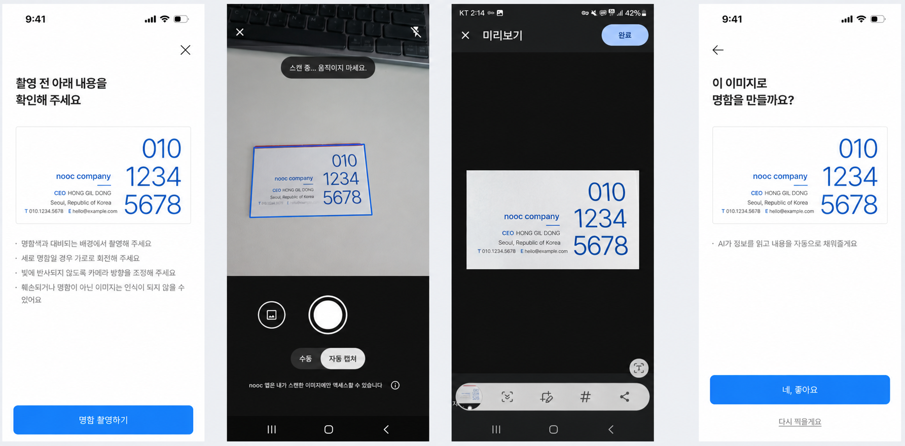
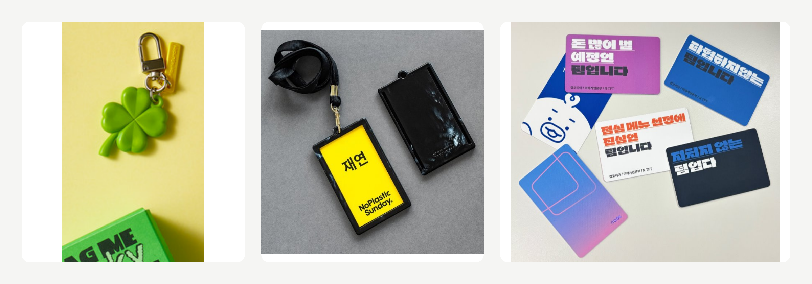

명함을 만드는 서비스에서, 꺼내 쓰는 서비스로
nooc는 잡코리아가 취업 준비생, 사회초년생과의 접점을 넓히기 위해 시작한 디지털 명함 프로젝트였습니다. 저와 팀은 회사에서 받은 명함이 없어도 자신의 활동과 관심사를 소개하고, 새로운 만남을 관계로 이어갈 수 있는 제품을 만들고자 했습니다.
PO이자 TF 리드로서 이 방향을 실제 사용 흐름과 출시 범위로 구체화했습니다. 정해진 일정 안에 명함 생성부터 공유와 저장까지 이어지는 앱을 출시한 뒤, 사용자 의견과 이용 데이터를 대조하며 무엇을 개선하고 어디에 더 투자할지 판단했습니다.
누가, 어떤 자리에서 이 명함을 꺼내 쓸까요?
채용 서비스는 주로 일자리를 찾는 시점에 이용합니다. nooc는 그보다 앞선 시기부터 사용자가 자신의 일을 소개하고 관계를 만들어 가는 접점을 확보하려는 시도였습니다. 이 사업 방향을 제품으로 옮기려면, 취업 준비생과 사회초년생이 굳이 디지털 명함을 만들어 쓸 장면부터 구체화해야 했습니다.
저와 팀이 주목한 것은 취업 스터디와 동아리, 사이드 프로젝트처럼 회사의 직함보다 개인의 관심사와 역할을 소개하는 만남이었습니다. 이름과 연락처만 전달하는 대신 자신이 하는 일과 포트폴리오, SNS를 한 장에 담고, 상대와의 관계에 맞게 보여줄 수 있도록 제품 목표를 정했습니다.
멀티명함과 NFC 명함은 이 사용 장면을 구현하는 기능이었습니다. 멀티명함으로는 활동과 관계에 따라 소개할 내용을 나누고 NFC 명함으로는 오프라인 만남에서 디지털 명함을 간편하게 건넬 수 있도록 했습니다. 정해진 출시 일정 안에서 명함 생성부터 공유와 저장까지 이어지는 흐름을 완성하는 데 집중했습니다. 출시 후에는 체험단의 의견과 이용 데이터를 함께 살피며 어떤 기능이 실제로 쓰이고 무엇을 보완해야 하는지 판단했습니다.

제한된 일정에서, 무엇을 끝까지 완성할 것인가
출시의 우선순위는 개별 기능의 완성도보다 전체 사용 흐름의 안정성이었습니다. 디지털 명함을 만들고 NFC 명함에 연결한 뒤 QR, URL, NFC로 공유할 수 있어야 했습니다. 받은 명함은 저장되고 상대와의 연결로 이어져야 했습니다. 어느 한 단계가 막히면 명함을 주고받는 경험 자체가 성립하지 않았습니다.
종이 명함 인식은 직접 입력하는 수고를 줄여 주는 기본 기능이었지만, 여기에 많은 개발 자원을 투입할 수는 없었습니다. 개발팀과 구현 방식을 검토해 외부 라이브러리로 글자를 읽고(OCR), AI로 이름과 회사명, 연락처 등 항목을 분류하는 방식(NER)을 택했습니다. 자체 인식 기술을 고도화하는 대신 제품 전체를 완성하는 데 자원을 배분했습니다.
AI 명함 인식은 한국어와 영어로 작성된 명함을 대상으로 범위를 한정했습니다. 다른 언어에 대한 대응과 촬영 과정의 다소 어색한 UI, 매끄럽지 않은 화면 전환은 후속 개선으로 남겼습니다. 인식 오류가 있을 때는 사용자가 직접 수정하거나 서비스 운영팀에 확인을 요청할 수 있는 흐름을 마련했습니다. 이 과정을 거쳐 명함 등록을 마치고, 이후 공유와 저장까지 정상적으로 이어지는지를 출시 기준으로 삼았습니다.
해야 할 일과 미룰 일을 분명히 한 결과, 목표한 4개월 안에 iOS와 Android 앱을 출시할 수 있었습니다.

좋다는 평가와 실제 사용은 달랐습니다
출시 직후에는 타깃에 맞는 사용자를 선별해 체험단을 운영하고 서비스에 대한 의견을 받았습니다. 이후 실제 이용 데이터를 함께 보니, 긍정적으로 평가한 기능이 모두 사용으로 이어지지는 않았습니다.
멀티명함은 활동이나 관계에 따라 자신을 다르게 소개할 수 있다는 점에서 좋은 평가를 받았습니다. 그러나 명함을 만든 사용자 중 두 개 이상 만든 비중은 약 8%였습니다. 여러 모습을 표현하고 싶다는 반응만으로는, 정보를 추가로 입력하고 명함을 나눠 관리할 만큼의 사용 동기가 있다고 판단할 수 없었습니다.
체험단에서는 태그로 명함을 건네는 방식에 긍정적인 반응을 보였고 약 72%가 NFC 명함을 공유에 유용하다고 평가했습니다. NFC 명함 구매자의 명함 생성과 업데이트, 교환 등 핵심 행동 참여율도 비구매자 대비 2배로 관찰됐습니다. 저는 이 두 결과에서 실물 카드를 매개로 대면 상황에서도 디지털 명함을 건네는 경험을 더 발전시킬 가능성을 봤습니다.
NFC를 더 자주 지니고, 자연스럽게 공유하도록
이에 사용자 조사에서 나온 키링, 사원증 결합 형태 등의 요구를 반영해 NFC 명함을 일상에서 지니고 다니다가 만남의 자리에서 꺼내 쓸 수 있도록 확장하는 계획을 세웠습니다.
이 아이디어들은 새 굿즈를 판매하는 데 목적을 두기보다, 명함을 지니고 다니다가 다른 사람에게 건네는 행동을 늘리기 위한 후속 안이었습니다. 이미 운영하던 NFC 명함의 제작과 판매 경험을 바탕으로 제품 개선 일정과 제작 및 마케팅 예산을 함께 계획했습니다.

명함 생성부터 공유까지, 첫 사용 경험을 개선했습니다
NFC 명함의 활용을 넓히는 계획과 함께, 첫 명함을 간편하게 만들고 공유할 수 있도록 생성 과정 개선과 CRM 운영을 병행했습니다.
초기 출시에서는 제한된 일정 안에 가입 기능을 완성하기 위해 휴대폰 번호의 점유 인증만으로 가입할 수 있도록 범위를 좁혔습니다. 이 방식으로 명함에 자동 입력되는 정보는 휴대폰 번호뿐이었고, 나머지는 사용자가 직접 작성해야 했습니다.
출시 후에는 소셜 가입을 우선 추가했습니다. 가입을 간편하게 하면서 첫 명함을 만드는 데 필요한 입력도 함께 줄일 수 있었기 때문입니다. 소셜 가입 시 이름과 프로필 사진, 이메일까지 자동으로 채워 사용자는 소속과 대표 SNS, 자기소개 등 자신을 설명하는 정보에 집중할 수 있도록 했습니다.
개선 후 가입한 당일 첫 명함을 만든 사용자의 비율이 40%에서 55%로 높아졌습니다. 가입 편의뿐 아니라 가입 과정에서 확보한 정보가 명함 작성으로 이어지게 하는 것이 첫 사용을 돕는다는 근거를 얻었습니다.
이 결과를 바탕으로 다른 정보도 직접 입력하는 부담을 줄일 수 있는지 검토했습니다. 링크드인 등 SNS의 프로필 정보를 가져오는 방식이 그중 하나였습니다. 정보를 더 많이 요구하기보다, 이미 작성해 둔 정보를 활용해 자신의 명함을 쉽게 완성하도록 하는 방향이었습니다.
명함 생성 과정의 개선과 병행해 Braze를 활용해 첫 공유를 유도하는 캠페인을 운영했습니다. 명함 보유 여부와 공유 이력에 따라 대상을 나누고 캠페인별 전환을 확인하며 발송 조건과 메시지를 조정했습니다. 명함을 만든 뒤 공유하지 않은 회원의 재안내 시점을 7일에서 5일로 앞당기는 등, 실제 행동을 보며 명함 생성부터 첫 공유까지 이어지는 운영 조건을 지속적으로 개선했습니다.
고객 확보를 넘어, 지속 사용의 근거로 투자를 판단하는 일
nooc를 시작한 목적은 취업 준비생과 사회초년생을 구직 시기 이전부터 고객으로 만나는 것이었습니다. 2025년 1분기 분석 대상의 63%가 잡코리아와 알바몬 모두 미가입 고객이었습니다. 명함 생성과 업데이트, 교환 등 핵심 행동 참여율이 비구매자보다 높았던 NFC 명함 구매자 중에서는 57%가 핵심 타깃인 35세 이하였습니다. 새로운 고객과 접점을 만드는 데서는 성과가 있었지만 이 접점이 이어지려면 사용자가 명함을 만든 뒤에도 필요할 때 다시 찾아와 사용해야 했습니다.
그 관점에서 이후 이용을 살펴보니, 가입 후 명함을 만든 회원의 4주차 재방문율은 5.9%였고 그중 명함을 공유한 회원은 23%였습니다. 고객을 더 모으는 것과 함께, 이미 들어온 고객이 다시 명함을 꺼내 쓰도록 만드는 문제를 해결해야 했습니다.
다음 성장 목표를 달성하려면 마케팅과 제품 개발에 추가 자원이 필요했습니다. 하지만 반복 이용이 충분히 뒷받침되지 않은 상태에서 고객 확보에 더 투자하는 것만으로는 지속적인 성장을 기대하기 어려웠습니다. 저도 이 상태에서 투자를 확대하지 않는다는 판단에 동의했습니다. 일부 NFC 이용자의 행동에서 추가로 확인할 가능성은 있었지만 사업 규모를 키울 투자 근거로는 충분하지 않았습니다. 리더십은 다른 과제의 우선순위와 필요한 자원을 함께 검토해 추가 투자를 중단했고 2025년 6월 전담 팀 운영 종료를 거쳐 2026년 7월 사업을 종료했습니다.
다시 한다면 신규 고객을 늘리는 것과 함께, 한 번 사용한 고객이 다음에도 nooc를 선택할 이유가 있는지부터 확인하겠습니다. 다시 사용하는 고객과 사용을 멈춘 고객의 차이를 살펴 개선할 문제를 좁히고 정해진 기간 안에 재사용이 달라지는지 보겠습니다. 초기 고객 확보의 성과에 더해, 지속 사용의 근거를 다음 투자의 판단 기준으로 삼겠습니다.